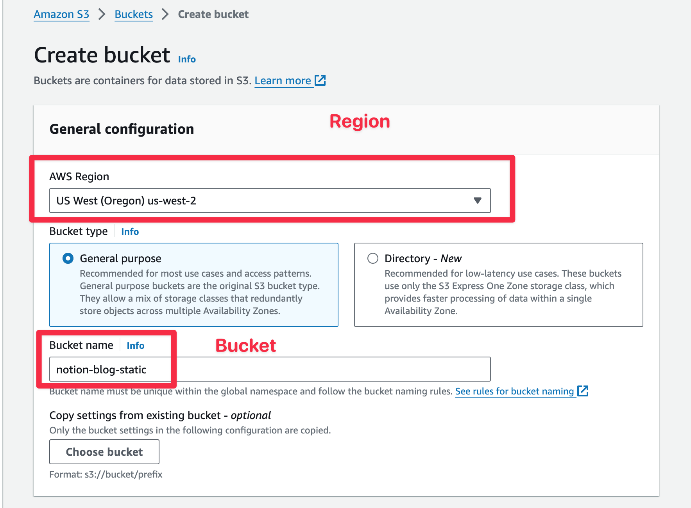
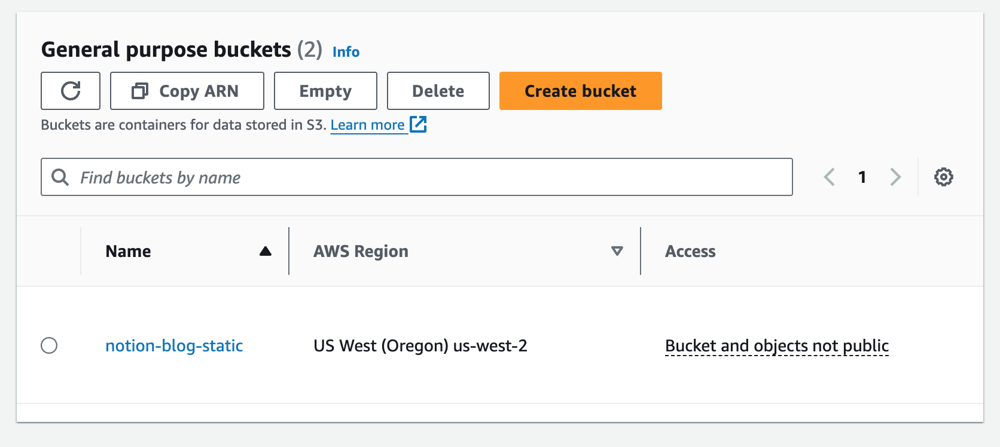
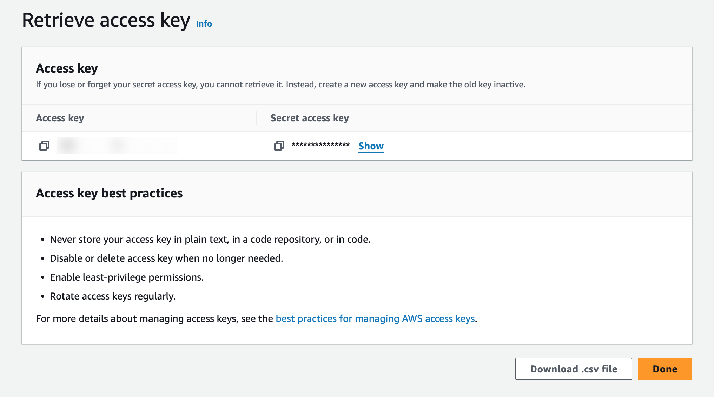

AWS S3
Amazon Simple Storage Service (Amazon S3) 是一种对象存储服务，提供行业领先的可扩展性、数据可用性、安全性和性能。各种规模和行业的客户可以为几乎任何使用案例存储和保护任意数量的数据，例如数据湖、云原生应用程序和移动应用程序。借助高成本效益的存储类和易于使用的管理功能，您可以优化成本、组织数据并配置精细调整过的访问控制，从而满足特定的业务、组织和合规性要求。官网地址见 AWS S3。
AWS 创建存储桶过程非常简单，进入 Amazon S3 创建存储桶 页面，它会自动帮你选择合适的存储桶位置，你需要填写的只有存储桶名称，其他选项可以保持默认。你可以手动修改存储桶地域，最后在页面的最下方点击创建按钮即可。

之后，页面会自动进入存储桶页面，记下存储桶名称，和区域信息，后面会用到，如我这里的存储桶名称是 notion-blog-static，区域是 us-west-2：

获取 AccessKey 和 SecretKey
进入 AWS 获取密钥页面，点击创建访问密钥按钮。

提示
Notion Flow 还支持自建支持 AWS S3 API 的 OSS 服务，如 Cloudflare R2，等，比官方 AWS S3 多了一个 endpoint 配置。